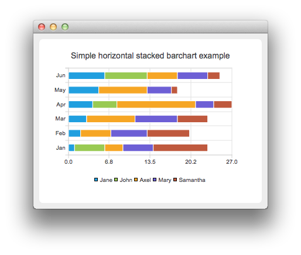

QHorizontalStackedBarSeries Class
The QHorizontalStackedBarSeries class presents a series of data as horizontally stacked bars, with one bar per category. More...
| Header: | #include <QHorizontalStackedBarSeries> |
| Instantiated By: | HorizontalStackedBarSeries |
| Inherits: | QAbstractBarSeries |
Public Functions
| QHorizontalStackedBarSeries(QObject *parent = Q_NULLPTR) | |
| ~QHorizontalStackedBarSeries() |
Reimplemented Public Functions
| virtual QAbstractSeries::SeriesType | type() const |
- 18 public functions inherited from QAbstractBarSeries
- 15 public functions inherited from QAbstractSeries
Additional Inherited Members
- 6 properties inherited from QAbstractBarSeries
- 5 properties inherited from QAbstractSeries
- 12 signals inherited from QAbstractBarSeries
- 4 signals inherited from QAbstractSeries
Detailed Description
The QHorizontalStackedBarSeries class presents a series of data as horizontally stacked bars, with one bar per category.
Each bar set added to the series contributes a single segment to each stacked bar.
See the horizontal stacked bar chart example to learn how to create a horizontal stacked bar chart.

See also QBarSet, QBarSeries, QPercentBarSeries, QAbstractBarSeries, QStackedBarSeries, QHorizontalPercentBarSeries, and QHorizontalBarSeries.
Member Function Documentation
QHorizontalStackedBarSeries::QHorizontalStackedBarSeries(QObject *parent = Q_NULLPTR)
Constructs an empty horizontal stacked bar series that is a QObject and a child of parent.
QHorizontalStackedBarSeries::~QHorizontalStackedBarSeries()
Removes the bar series from the chart.
[virtual] QAbstractSeries::SeriesType QHorizontalStackedBarSeries::type() const
Reimplemented from QAbstractSeries::type().
Returns the horizontal stacked bar series.